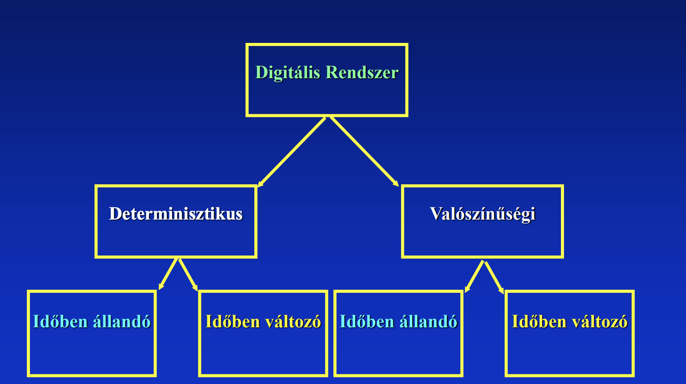
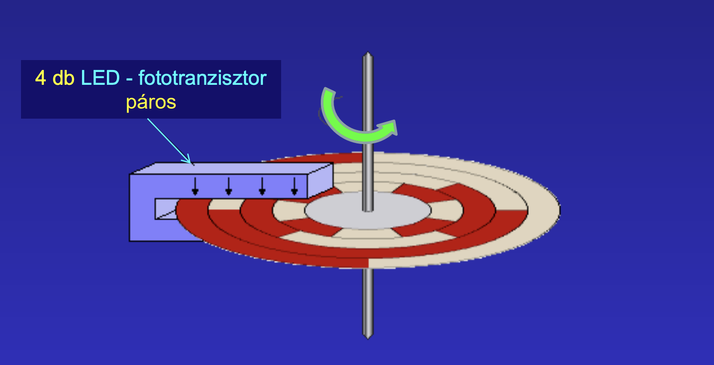
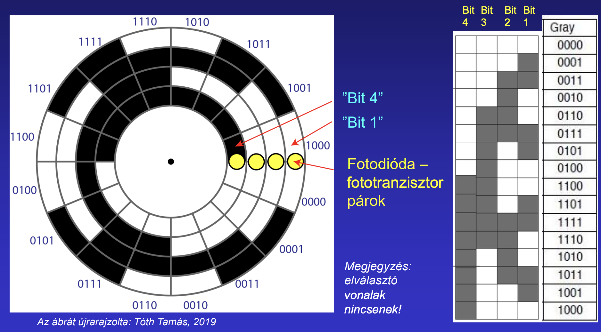

AUT, Glöckner György Digitális Technika, Digitális Elektronika tárgy
Minden labor kötelező (2 pótolható) - nincs beugró az 5 laborfoglalkozáshoz - az összes feladatot meg kell oldani mérési útmutatóban 2 zh - délután estefele csütörtökön 18-19:30 Félévközi jegy
Programozható áramkörök (FPGA - Field programmable gate array)
|Analóg | Digitális| |---|---| |folytonos jel | diszkrét érték| |fokozott zavarérzékenység | kevésbé zavarérzékeny | |folyt. jelek feldolgozhatók | közvetlenül számokkal tud műveletet végezni | |kevésbé üzembiztos | jobban üzembiztos |

Mintavételezési törvény - a legnagyobb frekvencia kétszeresével kell mintavételezni egy analóg jelet
Fogalma: 2 szimbólumrendszer elemeinek egymáshoz rendelése
Példák: - óvodások jele - Neptun-kód - Hangjegyek és azok neve
NBCD kód (természetes BCD kód)
Tulajdonságai: - súlyozott - természetes - egyértelmű - 4 bites
nem hibatűrő kiegészítő biteket adunk hozzá (pl paritásjelző bit)
léteznek egyéb súlyozások is
Példa: DC motor forgó tengelyének pozíció érzékelése 
Probléma: kiterjesztett NBCD-vel lehetséges nagyon nagy hiba
Gray-kód: egymás mellett levő szektorokból mindig csak 1 cella változik 
Előállítása: 0-val kezdve mindig tükrözzük az addigi számokat (egymás alá írva), a tükörtengely alatt levők elé egyest a felette lévők elő 0-t írunk.